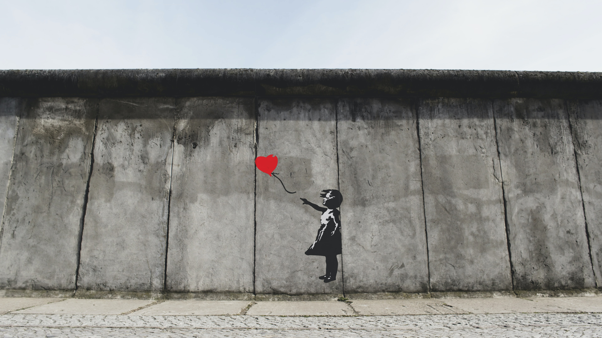
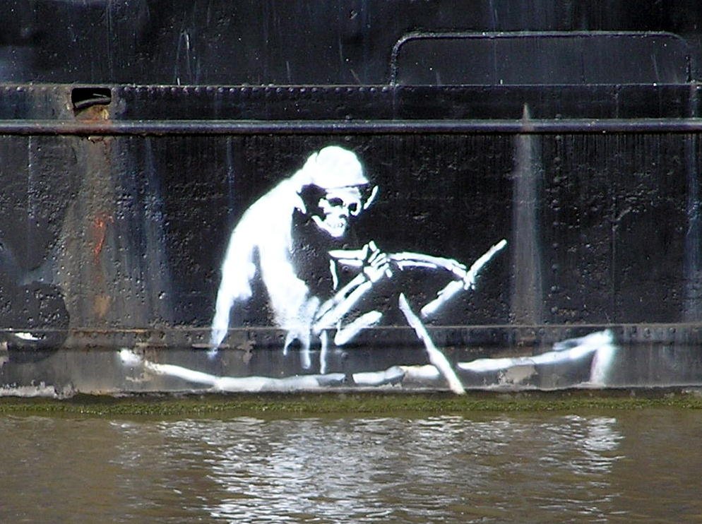

Banksy or Bust?
Banksy is a famous anonymous street artist and political activist. His work has been featured in many countries including United Kingdom, Belgium, Palestine, and the United States. His artwork can be dated back to at least the early 1990s.
Recently, Banksy’s works have been featured in museums. Because of the anonymity of Banksy and his artwork, many have questioned the artist behind a number of recent works.
 A piece discovered on Northeastern University’s Boston campus. Many have wondered: Banksy or Bust? However, the style is not consistent with other works by Banksy… The Boston piece is simply inspired by Banksy.